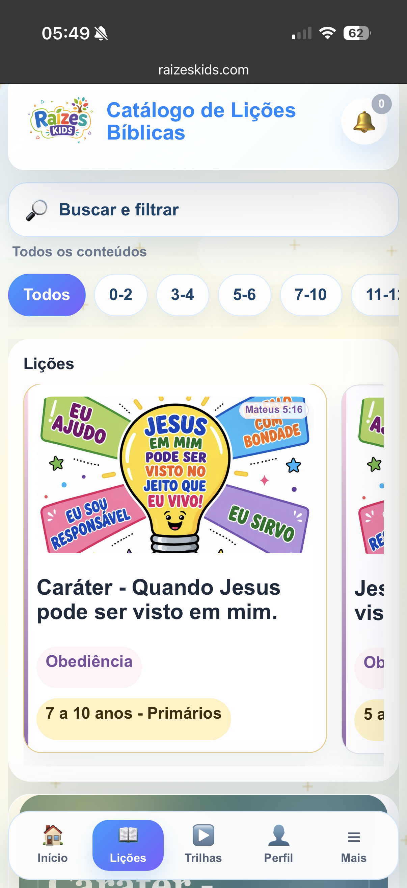
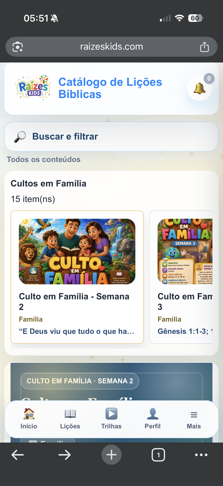

Prepare aulas bíblicas infantis em minutos, com organização e propósito
O Raízes Kids reúne lições, trilhas em vídeo, cultos em família, treinamentos e materiais prontos para líderes que desejam ensinar a Palavra com beleza, clareza e praticidade.
📱 Funciona no celular
📖 Separado por idade
🖨️ PDF no Premium
Um ambiente digital para apoiar ministérios com crianças
O sistema centraliza conteúdos que normalmente ficam espalhados: lições bíblicas, trilhas em vídeo, cultos em família, treinamentos, materiais de EBF, novidades e recursos para impressão. Treinamentos e EBF fazem parte do Plano Premium.
Ver por dentro
Conheça a experiência real no celular
Os prints abaixo foram capturados diretamente do sistema em navegação mobile. A proposta é simples: abrir, escolher o conteúdo e preparar a aula sem complicação.


Lições organizadas
Conteúdos separados por faixa etária, tema bíblico e tipo de aula.
Trilhas em vídeo
Vídeos organizados para apoiar a ministração e o preparo da equipe.
Culto em Família
Devocionais para continuar o discipulado das crianças durante a semana.
Treinamentos
Materiais Premium de apoio para líderes, voluntários e coordenadores.
PDF para impressão
Usuários Premium e administradores podem exportar materiais para impressão.
Uso no celular
Navegação prática para estudar, preparar e consultar o conteúdo de onde estiver.
O que você encontra
Uma plataforma visual, simples e pronta para o ritmo da igreja
O conteúdo fica separado por áreas, planos e faixas etárias para que o líder encontre rapidamente o que precisa preparar, ministrar ou imprimir.
Começar meu cadastro
Ministério com Criança
Planeje a aula em poucos minutos
Berçário
Maternal
Jardim
Primários
Antes e depois
Menos improviso. Mais direção para ensinar.
Lições em arquivos diferentes, vídeos perdidos, dificuldade para imprimir atividades e pouco tempo para organizar a aula.
Lições por faixa etária, trilhas por categoria, cultos em família, novidades e recursos Premium para apoiar o ensino com mais excelência.
Para quem é
Ideal para quem quer ensinar com preparo e simplicidade
Plano Premium
O pacote completo para organizar o ano ministerial
Com o Premium, você libera os recursos mais importantes para quem precisa preparar aulas, imprimir materiais e capacitar a equipe durante 12 meses.
Quero o Premium por R$ 349,90
Como funciona
Do cadastro ao uso em poucos passos
O acesso é controlado para manter o ambiente organizado e seguro. Primeiro você faz o cadastro, depois finaliza o pagamento e o administrador confirma sua licença.
Informe seus dados, CPF, igreja e senha de acesso.
Após o cadastro, o sistema leva você para a página de pagamento.
O administrador valida as informações, confirma o pagamento e ativa sua licença.
Entre pelo celular ou computador e comece a preparar suas aulas.
Tipos de acesso
Escolha o plano ideal para o seu momento
R$19,90/mês
Para líderes e famílias que desejam começar com baixo investimento mensal.
- Lições bíblicas
- Culto em Família
- Trilhas em vídeo
- Novidades e conteúdos base
R$349,90acesso por 12 meses
Para quem deseja um ciclo completo de organização com acesso anual.
- Acesso por 12 meses
- Todos os recursos do plano mensal
- Treinamentos e EBF
- Exportação de PDF
- Materiais prontos para impressão quando liberado
Sob consulta
Para igrejas e equipes que precisam organizar pessoas, conteúdos e comunicação.
- Gerenciamento de usuários
- Cadastro de conteúdos
- Controle de licenças
- Novidades e comunicação
Escolha com clareza
Qual acesso faz mais sentido para você?
O Mensal é para começar com o essencial. O Premium é para quem quer o pacote completo, com impressão, treinamentos e EBF durante 12 meses.
R$ 19,90/mês
Ideal para famílias e líderes que querem acessar as lições, trilhas e cultos em família.
- ✅ Lições bíblicas
- ✅ Trilhas em vídeo
- ✅ Culto em Família
- ✅ Novidades e conteúdos base
- PDF, Treinamentos e EBF ficam no Premium
R$ 349,90acesso por 12 meses
Ideal para líderes e equipes que querem preparar, estudar, imprimir e organizar o ano ministerial.
- ✅ Tudo do Plano Mensal
- ✅ Exportação de PDF
- ✅ Treinamentos
- ✅ Materiais de EBF
- ✅ Acesso liberado por 12 meses
Perguntas frequentes
Dúvidas antes de liberar seu acesso
O acesso é liberado automaticamente?
Não. Após o cadastro e pagamento, o administrador valida as informações e confirma a liberação do acesso.
Posso usar pelo celular?
Sim. O Raízes Kids foi pensado para uso prático pelo celular, tablet e computador.
Quem pode exportar PDF?
Administradores e usuários Premium podem exportar PDF para impressão.
Treinamentos e EBF estão em qual plano?
Treinamentos e EBF fazem parte do Plano Premium, junto com a exportação de PDF.
O que acontece quando minha licença vence?
O sistema solicita renovação. Após o novo pagamento, o administrador pode reativar ou prorrogar sua licença.
O conteúdo serve para igreja e família?
Sim. A plataforma tem conteúdos para aulas, trilhas, cultos em família, EBF e apoio ao discipulado infantil.
Comece hoje a organizar seu Ministério com Criança
Planos a partir de R$ 19,90 por mês. Mais tempo para cuidar das crianças, menos tempo procurando material perdido.